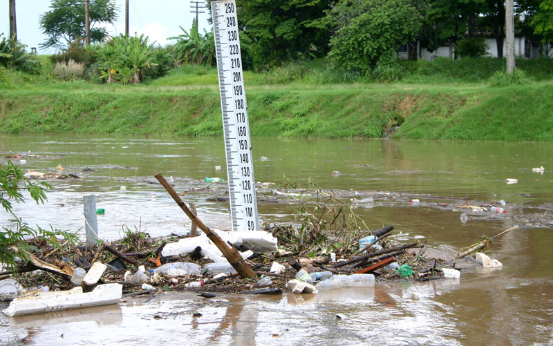

Investir em preveção é melhor doque em reparação

Mais de 3 milhões de brasileiros foram impactados por enchentes em 2023.
Cidades sofrem com perdas humanas, danos materiais e crises prolongadas.
Falta um sistema de alerta acessível e integrado. Com tecnologia,
podemos prever e agir antes que o pior aconteça.